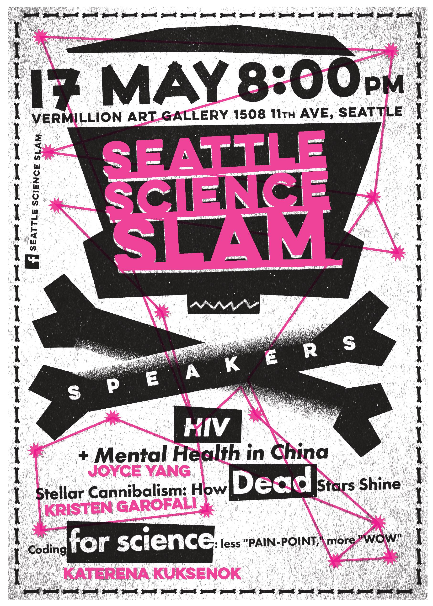
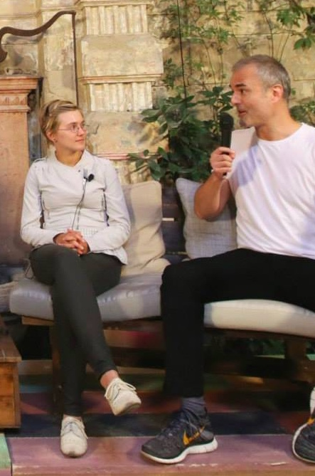

Katerena Kuksenok
PhD, MS in Computer Science & Engineering from University of Washington
BA in Applied Math; Computer Science from Oberlin College, Ohio, US
CV PDF (Dec '15) Reach me at: firstname.lastname@gmail.com
I do research, about tech+society, using an intriguing mix of qualitative
Interviews, surveys, ethnographic observation; user research
and quantitative
Natural language processing, machine learning, stats as appropriate
methods. I jut completed my PhD in Computer Science at the University of Washington, working with Professors James Fogarty and Cecilia Aragon. My dissertation
Come see a short talk about this on May 17th, 2016 evening at Vermillion gallery in Seattle, at the Seattle Science Slam!
 is on Influence apart from Adoption: How Interaction between Programming and Scientific Practices Shapes Modes of Inquiry in Four Oceanography Teams. Here is a short, 6-minute-read version with just the figures and implications: Code Work in Science: How it changes and Why is matters how we talk about change.
Upcoming Events
- May 17th, 2016. @Seattle, WA. Seattle Science Slam
- May 19th, 2016. @Seattle, WA. Final Examination / Defense at University of Washington
- Jun 19-24, 2016. @Dagstuhl, Germany. Engineering Academic Software Workshop
- Sep 26-30, 2016. @Lüneburg, Germany. Summer School on Simulation in Science
Tech+Society Research
- Role of social media in 2014 Ukraine Maidan events (Central European University, Phil Howard)
- Combining automated analysis of user-generated content with qualitative methods (Amazon.com, references upon request)
- Emotion in scientific creativity - automating analysis of a large chat dataset (UW, Cecilia Aragon)
- Classroom tech for language learning (UW, Charlotte Lee)
- Using active learning to improve statistical machine translaiton output (AT&T Research, Srinivas Bangalore)
- Accessibility of user-generated content (UW/CMU, Jen Mankoff)
- Navigating conflicting health information online in chronic illness management (Carnegie Mellon, Jen Mankoff)
Selected peer-reviewed publications

Here's a video of a panel I (left) was on - moderated by Nick Denton, Gawker Media founder (right) - about the role of social media in political action. (Budapest '14)
- Chen C, White L, Kowalewski T, Aggarwal R, Lintott C, Comstock B, Kuksenok K, Aragon C, Holst D, Lendvay T. Crowd-Sourced Assessment of Technical Skills: a novel method to evaluate surgical performance. J Surgical Res. 2014; 187(1): 65-71.
- Kuksenok K, Brooks M, Wang Q, Lee C P. Challenges and Opportunities for Technology in Foreign Language Classrooms. CHI 2013, premier publishing venue in the Human-Computer Interaction (HCI) community. Best Paper Honorable Mention (top 5%)
- Kuksenok K, Mankoff J, Brooks M. Accessible Online Content Creation by End Users. Proceedings of the SIGCHI Conference on Human Factors in Computing Systems. ACM, 2013.
- Brooks M, Kuksenok K, Torkildson M K, Perry D, Robinson J J, Scott T J, Anicello O, Zukowski A, Harris P, Aragon C. Statistical Affect Detection in Collaborative Chat. In Proceedings of the 2013 conference on Computer supported cooperative work. ACM, 2013.
- Scott T J, Kuksenok K, Brooks M, Aragon C. Adapting Grounded Theory to Construct A Taxonomy of Affect in Collaborative Online Chat. Proceedings of the 30th ACM international conference on Design of communication. ACM, 2012
- Mankoff J, Kuksenok K, Kiesler S, Rode J, Waldman K. Competing Online Viewpoints and Models of Chronic Illness. Proceedings of the SIGCHI Conference on Human Factors in Computing Systems. ACM, 2011.
Book chapters
- Kuksenok K. "Multilingualism on Social Media in the Maidan Movement." Digital Eastern Europe. Edited by Schreiber and Kosienkowski. 2015.
Methods blogging
- medium.com/@katerena/ How I do User Research- featured in at least 2 human-computer interaction (HCI) courses as recommended reading!
- Lightweight user research: on interviews and surveys
- medium.com/@katerena/ Apps I'm Using for Writing a Lot
- medium.com/@katerena/ One Coder Coding - a programmer's approach to qualitative analysis
No Favorite Languages
- Talking about RoboCup robot soccer to the press at IranOpen competitions. Later, at a bus station, I saw myself on Iranian TV giving an interview! (Tehran '15)
Talking about RoboCup robot soccer to the press at IranOpen competitions. Later, at a bus station, I saw myself on Iranian TV giving an interview! (Tehran '15)
I do not have a favorite programming language, but currently I'm using python (in iPython Notebook environment), C++ (in the Arduino environment) and Java (in the Processing3 environment). Relational databases has always made me smile, but they're not part of my life right now.
I also do not have a favorite people-language, but I speak English, Russian, and Ukrainian with a native proficiency. I am actively learning German, and looking for study partners or people interested in language exchange,who want to learn one of the languages I already know!
(You may also know me by: Kateryna Kuksenok, Katie Kuksenok, Katja Kuksenok, Kt Kuksenok. Feel free to use any! I prefer Katja or Katerena (emphasis on the "re" syllable, pronounced as in "reykjavik," not as in "scream". But, in fact, I do not mind!)